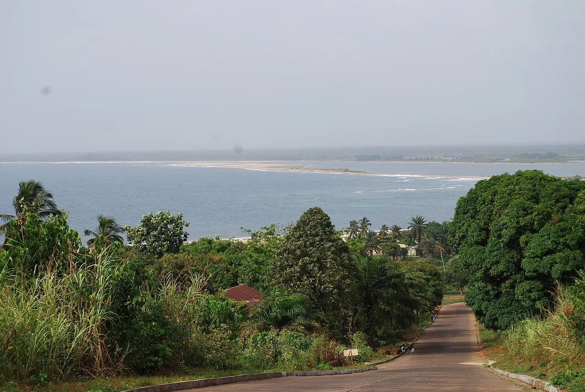

Robertsport
Grand Cape Mount, Liberia · surf

Plusieurs gauches de point break devant une petite ville isolée. Une destination de surf rare en Afrique de l’Ouest.
- Lieu
- Grand Cape Mount, Liberia
- Niveau
- Intermédiaire
- Activités
- surf
- Type d'eau
- Mer / océan
- Coordonnées
- 6.75, -11.37 (position approximative du secteur)
Dangers à connaître
- Secours éloignés.
- Rochers aux pointes.
Le conseil d'Ocean Buddy
Voyage avec un contact local : les infrastructures sont limitées.
Ouvrir dans Ocean Buddy Télécharger sur l'App Store
Source : Fiche Ocean Buddy · septembre 2026 · à vérifier localement.